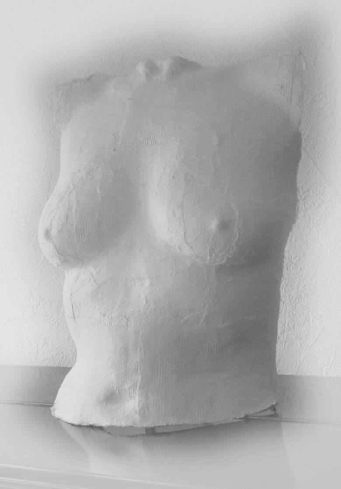
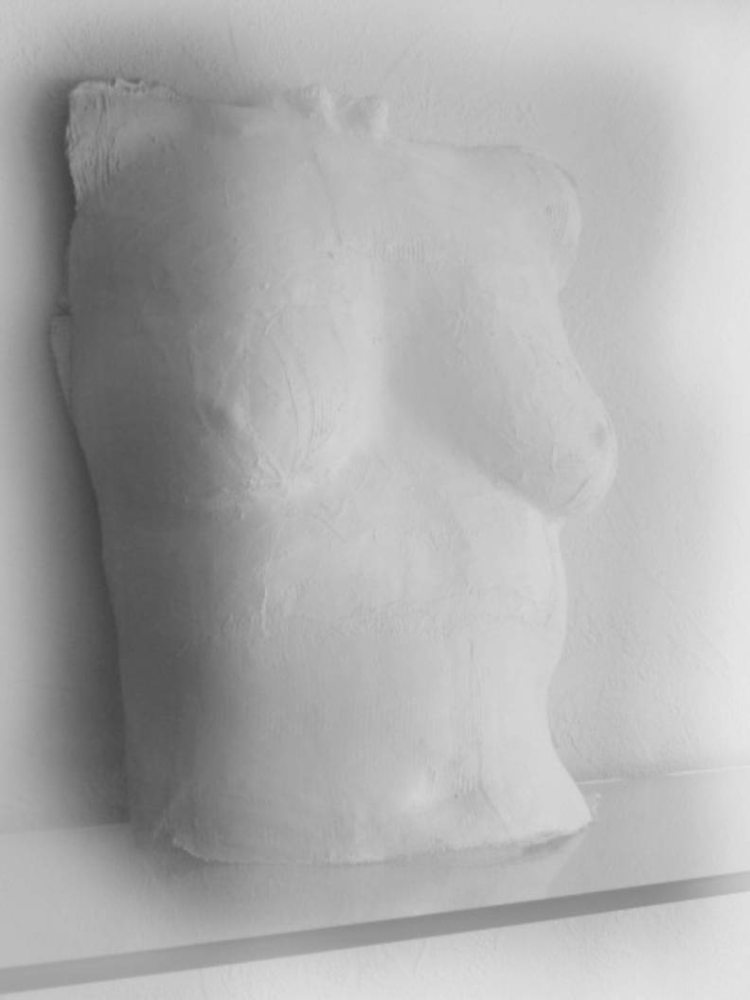

Bodygips Möchtest Du auch so ein Bild? Ein tolles Geschenk für den
Partner und eine schöne Erinnerung für einen selber dann geht’s hier weiter
Eine Skulptur von Dir oder von Deinem Partner?

Unsere Gipsabformungen sind
Positiv-Abdrücke. Das heißt, die Außenform des Abdrucks ist die sichtbare
(Schmuck)-Seite. Dies wird durch eine behutsame Auftragtechnik erreicht,
mit der eine dünne und formgenaue aber dennoch stabile Form entsteht. Du nimmst auf einem Handtuch platz so, dass die
abzuformenden Partien erreichbar sind und Du trotzdem einige Minuten
verharren kannst ohne Dich zu bewegen. Die Haut kann vorher mit einem hautfreundlichen Öl
behandelt werden, damit das Abnehmen erleichtert wird. Das Auftragen der Gipstextilschicht dauert ca 20
Minuten, die erste Trocknung weitere ca 20-30 Minuten. Die Abformung wird dann vorsichtig nach oben
abgezogen und braucht noch etwa eine weitere Stunde um vollständig
auszuhärten. Im Prinzip kann jedes Teil des
Körpers in eine wunderschöne Gipsform gebracht werden. Die einzige Voraussetzung
ist, dass die Gipsabformung abgezogen werden kann, wenn der Gips getrocknet
ist. Folgende Abformungen sind ohne besondere
Schwierigkeiten zu machen: Alle anderen Teile können auch abgeformt
werden sofern der getrocknete Gips abziehbar oder abschneidbar ist. Es
besteht dann jedoch Bruchgefahr beim Abnehmen. Alle
Gipsabformungen sind Unikate. Bodygips Anfrage
Entstehung Verwendung
Bedingungen Einführungsaktion-Modelle gesucht Kontakt Links
Entstehung der
Gipsabformung
Was kann alles abgeformt werden

Anfrage
Entstehung Verwendung
Bedingungen Einführungsaktion-Modelle gesucht Kontakt Links
Wie kann ich eine solche
Gipsabformung verwenden? So ein Körperbild ist natürlich Die Gipsabformungen können folgendermaßen aufbewahrt werden: Bemalung Ich persönlich finde, dass der unbemalte (weisse) Gips die
Räumlichkeit des Objekts sehr gut zur Geltung bringt. Natürlich kann der
Gips nach dem Trocknen auch noch bemalt oder besprüht werden. Lass' Deiner
Kreativität freien Lauf. Übrigens:
Seit Jahren gibt es auf dem Schwabinger Künstler-Weihnachtsmarkt auf der
Münchner Freiheit einen Künstler, der bunt bemalte Ton-Skulpturen von
Körperabformungen anbietet. Dabei handelt es sich um Negativ-Formen. Auch
sehr schön. Bodygips 


Es gibt Geburtstage, Jahrestage, Hochzeitstage .. und einfach geliebte
Menschen
Durch den Licht- und Schatten-Effekt kommt an einer Wand die Drei-Dimensionalität
des Objekts sehr gut zur Geltung.
Das bietet die Möglichkeit die Form am besten von allen Seiten zu
betrachten.